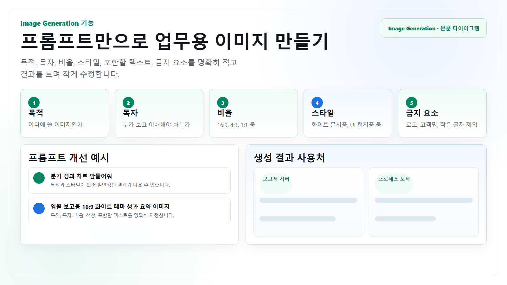

발표 자료
슬라이드 첫 장, 섹션 구분 이미지, 개념 설명용 배경을 만듭니다.
Image Generation
첨부 이미지 없이도 보고서 커버, 발표용 개념도, 사내 캠페인 배너, 교육 자료용 그림을 만들 수 있습니다. 핵심은 목적, 독자, 화면 비율, 포함할 텍스트, 금지 요소를 명확히 쓰는 것입니다.

기존 이미지를 업로드해 수정하는 흐름은 사용하지 않습니다. 대신 텍스트 설명만으로 새 이미지를 만들고, 결과를 보며 수정 지시를 반복합니다.
슬라이드 첫 장, 섹션 구분 이미지, 개념 설명용 배경을 만듭니다.
사내 공지, 교육 콘텐츠, 정책 안내에 들어갈 단순하고 명확한 시각 자료를 만듭니다.
제품 컨셉, 캠페인 무드, 프로세스 은유를 빠르게 시각화합니다.
작성법
| 항목 | 넣을 내용 | 예시 |
|---|---|---|
| 목적 | 이미지가 쓰일 문서와 독자를 밝힙니다. | 신입 온보딩 3장 슬라이드의 첫 화면에 넣을 “업무 요청 흐름” 개념도 |
| 구성 | 주요 오브젝트, 배치, 여백, 텍스트 위치를 적습니다. | 왼쪽 직원 아이콘, 가운데 텍스트 맥락 입력, 오른쪽 Chat/Projects/Research 결과 카드 3개 |
| 스타일 | 현실 사진, 플랫 일러스트, UI 캡처풍, 아이소메트릭 등 스타일을 지정합니다. | 화이트 배경, 얇은 녹색·파란색 선, 사내 교육 자료에 맞는 미니멀 인포그래픽 |
| 금지 요소 | 브랜드 로고, 실제 인물, 과도한 장식, 읽기 어려운 작은 글자를 제외합니다. | 실제 회사 로고, 고객명, 실제 인물 얼굴, 10pt 이하 작은 문구는 넣지 말 것 |
수정 방식
비율, 목적, 톤, 핵심 구성만 정해서 첫 이미지를 만듭니다.
텍스트가 작다, 요소가 많다, 톤이 어둡다처럼 문제를 분리해 말합니다.
슬라이드, 문서, 메신저 카드 등 실제 사용 크기에서 읽히는지 확인합니다.
복사해서 쓰기
업무 목적: 신입 온보딩 자료에서 “첨부 없이 AI에 업무 맥락을 주는 법” 설명
사용 위치: 16:9 사내 교육 슬라이드 1장
대상 독자: 입사 1개월 이내 비개발 직군 임직원
파일 첨부 없이 새 이미지를 생성해야 함.
이미지 설명:
- 주요 장면: 직원이 회의 메모, 공개 URL, 체크리스트를 텍스트로 정리해 ChatGPT Enterprise에 전달
- 포함할 요소: 직원 아이콘, 텍스트 입력 박스, Chat/Projects/Deep Research 결과 카드
- 배치: 왼쪽 입력, 가운데 AI 워크스페이스, 오른쪽 결과물 3개
- 포함할 텍스트: “목표”, “맥락”, “검토 기준”, “결과”
스타일:
- 배경: 순백색
- 색상: 녹색 #00875f, 파란색 #1a73e8, 회색 선
- 표현 방식: 얇은 선의 업무용 인포그래픽, 과장된 캐릭터 없음
제약:
- 실제 회사 로고, 고객명, 개인정보는 넣지 말 것
- 작은 글자는 최소화하고 핵심 단어만 크게 표시
- 장식보다 정보 구조가 먼저 보이게 만들 것
화면 비율: 16:9